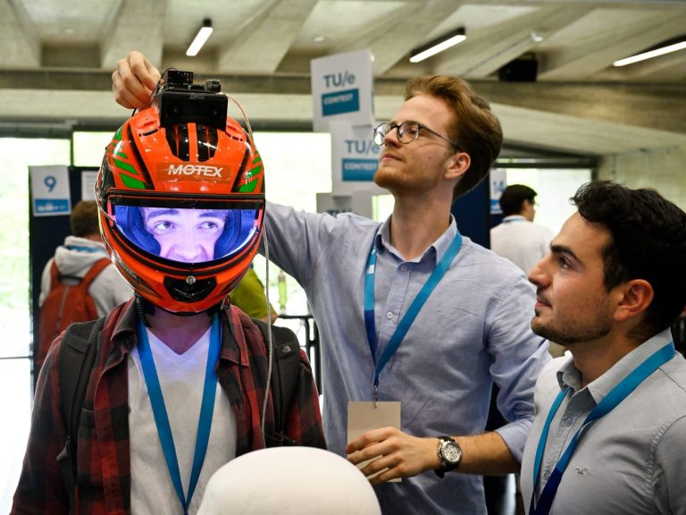
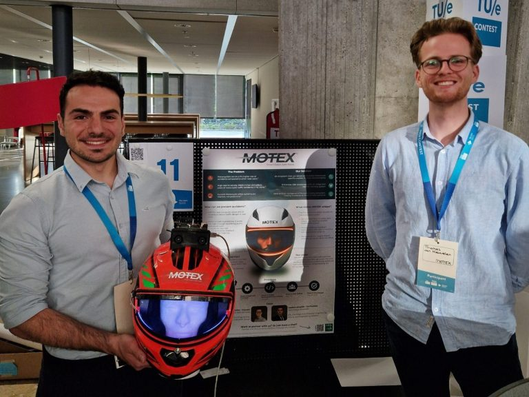
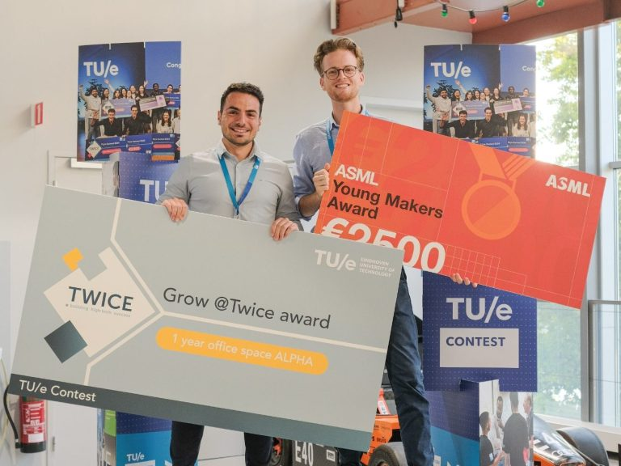

MOTEX
Advanced Rider Assistance System
MOTEX is a predictive rider assistance concept designed to improve urban motorcycle safety in complex traffic situations.
The system combines helmet-integrated hardware, computer vision, and real-time warning logic to help riders identify potential hazards earlier and respond more effectively.
What made the project distinctive was its focus on anticipation rather than reaction alone, exploring how technology can support earlier awareness when visibility, timing, and rider decision-making are critical.